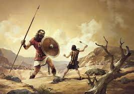

| Dios |
Dios se le presenta a Moisés en medio de una zarza ardiente que no se consumía y le ordeno sacar a
Israel de la esclavitud. Envío plagas a Egipto, abrió el mar rojo y alimentó a su pueblo en el
desierto, les ayudo en las batallas de conquista y reprendió a su pueblo por su pecado, los
amonestaba a través de los profetas y por ultimo dio a su único hijo (Jesús) como sacrificio santo
para la reconciliación con la humanidad |
 |
| Moisés |
Su nombre según Éxodo 2 significa salvado de las aguas, creció en la opulencia del palacio del
faraón egipcio y más tarde descubrió sus orígenes judíos y tuvo que huir por haber asesinado a un
egipcio que maltrataba a otro judío, en su exilio fue pastor y se casó, y cierto día durante sus
labores diarias fue llamado por Dios para regresar a Egipto y salvar a los Israelitas. Fue usado por
Dios para traer las plagas a Egipto, abrir el mar rojo, guiar al pueblo en el desierto y entregar al
pueblo las tablas de la ley (10 mandamientos). Es uno de los principales protagonistas de la
historia judía |
|
| Josué |
Su nombre significa Yahveh salva o Yahveh de salvación. Es un personaje de la Biblia. La vida y obra
se narra desde los Números hasta el Libro de Josué, según el cual, fue escogido por Dios para
suceder a Moisés como líder de los israelitas durante la conquista de Canaán; conquistó la mayor
parte del territorio de la tierra prometida y la distribuyó entre las doce Tribus de Israel. Una de
sus hazañas más recordadas es la caída de los muros de Jericó |
|
| Jueces |
Después de la muerte de Josué, el pueblo se volvió idolatra y cada quien hacia lo que le parecía.
Por esto sus enemigos los dominaron y Dios levanto a estos Jueces para ayudar a su pueblo. Los
Jueces que gobernaron Israel mencionados en el Libro son 14 en total: Otoniel: (Jue 3:7-11), Aod:
(Jue 3:15), Samgar: (Jue 3:31), Débora (y Barac): (Jue 4-5), Gedeón: (Jue 6-8), Tola: (Jue 10:1),
Jaír: (Jue 10:3), Jefté: (Jue 10:6-12:7), Ibzán: (Jue 12:8), Elón: (Jue 12:11), Abdón: (Jue 12:13),
Sansón: (Jue 13-16) y Samuel:(1 Sam 7,15) |
|
| Samuel |
Samuel fue un profeta, y el último juez de Israel; fue instruido por Elí y le sustituyó como juez en
Israel cuando esté murió. Su padre Elcana y su madre Ana la cual era estéril, Dios le dio un hijo a
Ana (Samuel) y quien dedicó al servicio de Dios en el templo de Silo al cuidado del sacerdote Elí.
Fue él quien ungió al primer rey de los israelitas, Saúl, quien gobernó el Reino de Israel durante
el período de la monarquía unida, de igual manera Samuel ungió a David como rey de Israel por orden
de Dios. |
|
| Rey Saúl |
Fue rey de Israel, su vida y obra se narra en los libros de Samuel. La narrativa bíblica marca una
transición de una sociedad tribal dispersa, a la condición de un único estado llamado Reino Unido de
Israel. Tuvo varias batallas contra los Filisteos, las que gano mientras Dios estuvo con él, pero
cuando Saul se preocupaba mas por agrada a los hombres que a Dios y no obedecia las ordenes del
profeta Samuel Dios decide quitarle el respaldo y unge a David como proximo rey. Finalmente cae
muerto en batalla junto a su hijo Jonathan. |
|
| Rey David |
Su vida y obra se describen en los libros de Samuel y las Crónicas, mientras su ancianidad y su
muerte se narran al comienzo de I Reyes. Fue sucesor de Saúl como segundo monarca del Reino Unido de
Israel, que expandió significativamente gracias a que Dios estaba con él y lo guiaba en victorias.
Una de las batallas más recordadas fue contra el gigante Goliat y sus principales enemigos fueron
los filisteos. A David se le atribuye tener un corazón conforme a Dios por lo que escribió gran
parte de los Salmos y conto con la ayuda de Dios a lo largo de su vida, a pesar de haber pecado de
adulterio y asesinato; a causa de este pecado hubo muchas tragedias en su familia descritas en la
biblia. |
 |
| Rey Salomón |
Fue sabio y rey del Reino Unido de Israel que sucedió a su padre: David. Dios le dio gran sabiduría,
prosperidad y fama, a causa de que le agradó que pidiera sabiduría para guiar a su pueblo (Israel).
Durante su reinado Israel fue muy prospera por lo que su palacio y templo eran admirados por otros
reyes de la época. Escribió varios Salmos, Proverbios y el libro de Cantar de los Cantares. Al final
de su vida desvió su corazón a otros dioses, lo que provocó la ira de Dios y la división Israel en 2
(Israel: reino del norte y Judá: reino del sur) |
|
| Reino de Judá |
El Reino de Judá, Reino del Sur o Reino de Judea fue un estado del Levante mediterráneo durante la
Edad de Hierro, su capital fue la ciudad de Jerusalen y llegó a su fin cuando el rey Nabucodonosor
lo conquistó. tuvo en total 20
reyes descritos en los libros de Reyes y Cronicas |
 |
| Reino de Israel |
El Reino de Israel, Reino del Norte o Reino de Samaria fue un estado del Levante mediterráneo
durante la Edad de Hierro. Su capial fue la ciudad de Samaria. Tras dos décadas de ataques e
invasiones por parte del Imperio asirio Israel finalmente fue conquistada y el rey Sargón terminó
exiliando una porción de sus habitantes.tuvo en total
20 reyes descritos en los libros I Reyes y II Reyes |
|
| Profetas Mayores |
Profetas mayores es una expresión de origen cristiano, utilizada para designar a ciertos libros
proféticos del Antiguo Testamento (nombre cristiano de la Biblia hebrea). El adjetivo "mayores" hace
alusión a la extensión de cada uno de los libros, no a su importancia o autoridad. Los libros
bíblicos llamados Profetas Mayores son: Isaías, Jeremías, Ezequiel, y Daniel. |
|
| Profetas Menores |
Los Profetas Menores, a veces llamado los Doce Profetas, Libro de los Doce o Libro de los Doce
Profetas Menores, son los doce libros proféticos de menor longitud del Antiguo Testamento, que van a
continuación de los profetas mayores. En la biblia hebrea están agrupados en un solo libro al final
de Nevi'im. El término "menor" se refiere a la longitud de cada libro (que van desde un solo
capítulo a catorce), e incluso el más largo es corto en comparación con los de los cuatro profetas
mayores. Los libros de los profetas menores son: Oseas, Amós, Miqueas, Joel, Abdías, Jonás, Nahum,
Habacuc, Sofonías, Hageo, Zacarías, Malaquías |
|
| Isaías (profeta) |
Tambien llamado "El Profeta Mesiánico". De todos los escritos proféticos, Isaías es el más hermoso y
sublime. En ninguno de los otros libros obtenemos una vista tan gloriosa del Mesías y de su reino.
Debido a su énfasis en la gracia de Dios y en su obra redentora con relación a Israel y a las
naciones, se le ha llamado al libro de Isaías "el quinto evangelio", y a su autor, "el evangelista
del Antiguo Testamento". Profetizo acerca del cautiverio, el juicio de las naciones, la invasión y
el rescate de Judá y la gloria futura del pueblo de Dios |
|
| Jeremías (profeta) |
También llamado el profeta de las lágrimas o profeta llorón. Escribió los libros de Jeremías y
Lamentaciones, fue llamado por Dios siendo Joven. Jeremías fue duramente perseguido durante el
periodo de los reyes Josías, Joasím, Joaquín y Sedequías. Profetizó detalladamente acerca de la
cautividad de Judá, dio mensajes al pueblo de esperanza para su postcautividad y profetizó a otras
naciones como Egipto, Moab, Amón, Edom y Damasco. |
|
| Cautiverio |
Se conoce con el nombre de Cautiverio de Babilonia o Cautividad en Babilonia al período en el que
parte considerable de los habitantes del Reino de Judá estuvieron exiliados en Babilonia, comenzando
la deportación y el exilio de los judíos inmediatamente después de la toma de Jerusalén y la
destrucción del Templo por Nabucodonosor II y finalizando con el edicto del rey persa Ciro de 538 a.
C. que permitió el regreso de los judíos a sus tierras de origen en el año siguiente |
|
| Asiria |
En el siglo VIII a.C., el poder de los asirios creció hasta llegar a dominar Oriente Próximo,
avanzando hasta las fronteras de los Estados en conflicto, para quienes la invasión y el desastre
resultaron inevitables. La fortaleza en Samaria pudo soportar el acoso hasta 722-721 a.C., año en
que las tropas asirias finalmente lograron tomar la ciudad. El reino de Israel quedó destruido, y
muchos de sus habitantes partieron hacia el destierro; desde ese momento se los conocería como las
tribus perdidas. Samaria fue repoblada con inmigrantes procedentes de Mesopotamia, que rápidamente
adoptaron la religión israelita, y se convertirían en la secta conocida como samaritanos. |
|
| Daniel (profeta) |
Daniel, de la tribu de Judá, siendo muy joven, fue llevado cautivo a Babilonia y Junto con otros
tres jóvenes fue colocado en la corte de Nabucodonosor afín de que obtuviera la educación de los
caldeos. Interpreto los sueños del rey Nabucodonosor y llego a ocupar uno de los puestos más altos
en el reino gracias a su sabiduría y honestidad. Uno de los pasajes mas recordados son el foso de
los leones y sus visiones del futuro y el fin de los tiempos |
|
| Babilonia |
El reino de Judá se negó a someterse a los caldeos, a diferencia de lo que había sucedido con los
asirios. En el 598 a.C. Nabucodonosor II, soberano de Babilonia, declaró la guerra al reino de Judá
y conquistó Jerusalén. La mayoría de los nobles, guerreros y artesanos de Judea fueron hechos
prisioneros y llevados a Babilonia. El rey Nabucodonosor nombró al príncipe de la casa de David,
Sedecías, rey de Judá. En el 588 a.C. Sedecías se rebeló contra los caldeos; dos años más tarde, el
ejército de Nabucodonosor destruyó Judá y arrasó su capital, Jerusalén. Todos los habitantes de Judá
que fueran considerados potenciales líderes de revueltas, fueron deportados a Babilonia. Otro grupo
huyó a Egipto, llevándose al profeta Jeremías, a pesar de sus protestas. Sólo permanecieron en Judá
los campesinos más pobres. |
|
| Reconstrucción del templo |
|
 |
| Malaquías |
Profetizó durante la época del gobernador Nehemías, en la época postcautiverio. Es el ultimo libro
del antiguo testamento y fue el último profeta antes del llamado El periodo de los 400 años de
silencio de silencio de Dios |
|
| Jesús |
|
|
| Crucifixión y muerte de Jesús |
|
|